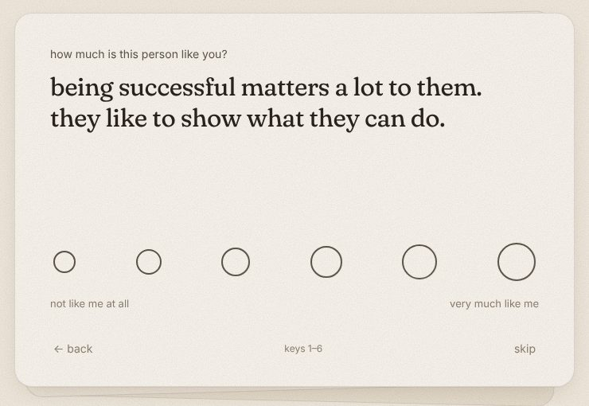
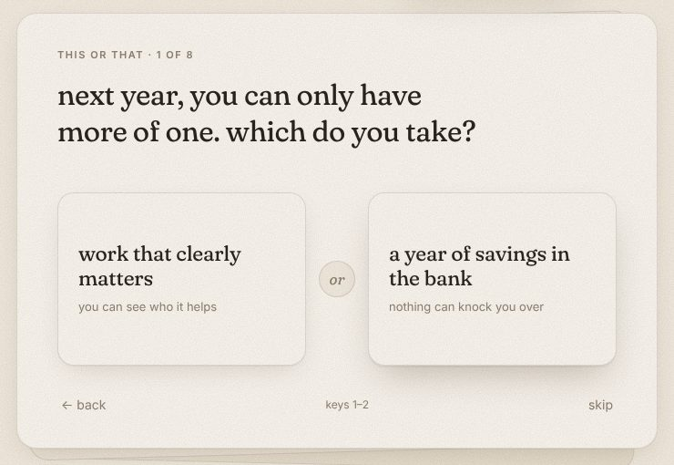
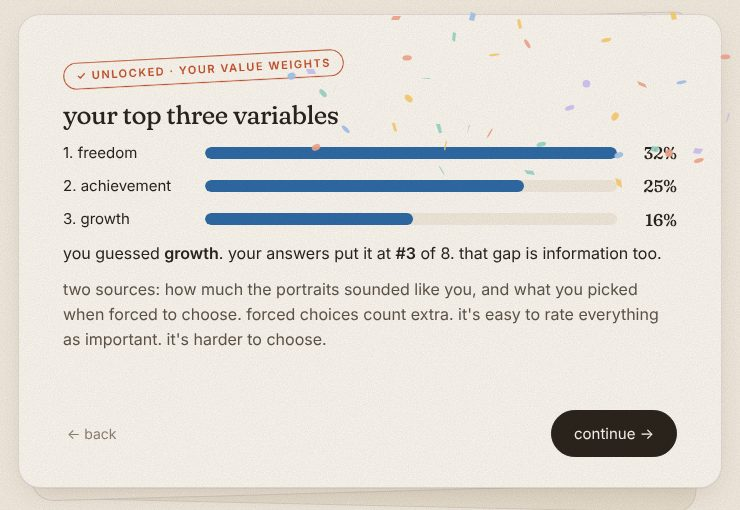

a playable version of the essay. you answer one card at a time, and your utility function builds itself next to you as you go.



every answer moves a weight in your function. you see it change in the margin: 0.32·ln(1+F) for what you chase, −0.11/(1+S) for what you escape. at the end you get one of four types, a few honest observations, and your own reflections quoted back.